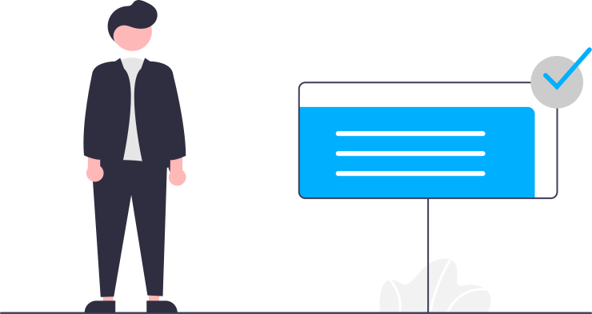
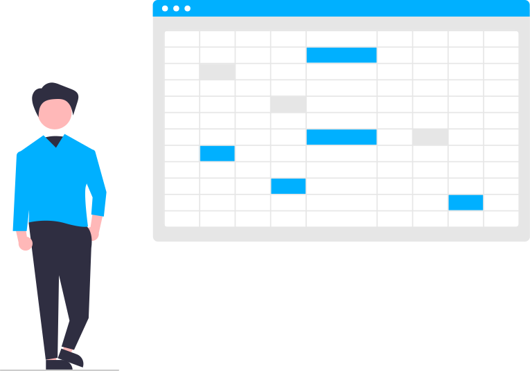

Preguntas Frecuentes
Si tenes alguna otra duda, contactanos sin compromiso
Me interesa tener una pagina ¿Cómo procedemos?
¡Reunión para conocernos!
Se pacta una fecha estimada acordaba por ambas partes para conocer la idea y propuesta del cliente. Normalmente por cualquier plataforma la cual permita vídeoconferencias.

¡Analisis del proyecto!
En esta etapa el equipo de desarrollo de Koya Web se encarga de analizar la propuesta del cliente y a partir de ello elabora desde el tiempo estimado que costara la realización del proyecto hasta el presupuesto total del mismo.

¡Aceptación del cliente!
Luego de ser analizada la propuesta se llevara al cliente la misma, esperando su aceptación y algunas mejoras para la misma. Luego de esto, el equipo de Koya Web llevará a cabo la realización completa del proyecto ya aclarados costos y tiempo de entrega

¡Entrega!
Finalmente luego de la finalización del proyecto, se le presentará al cliente el resultado final. En esta última etapa el cliente puede optar por aceptar el mantenimiento arancelado de Koya Web sobre el mismo trabajo realizado.

¿Por qué debo tener una página web?
Tener tu propia página web asegura tu presencia en línea. Esto te da ventajas competitivas, y te permite conectarte con personas a las que de otro modo no podrías llegar. No importa el “rubro” en que trabajes: contar con una página web te ayuda a dar visibilidad a tu trabajo, a tu empresa, a tu perfil profesional. Nosotros te ayudaremos a lograrlo.
¿Cuál es el costo de realizar una página web?
Ya que cada proyecto web es diferente, los tiempos de desarrollo varían, y por ende el costo también. Podes ponerte en contacto con nosotros para contarnos sobre tu proyecto o idea, de esta manera podemos armarte una propuesta que se adapte a lo que necesitas. Una vez que entendamos cuáles son tus requerimientos podremos darte un presupuesto acorde.
El tiempo que demoremos en crear tu página web depende de la complejidad de la misma. Cada proyecto es único y diferente, por lo que los tiempos varían. No es lo mismo una landing page que un eccomerce, aun así, la mayoría de nuestros proyectos se realizan en un plazo no mayor a 30 días desde la confirmación del trabajo. El tiempo que tardes en disponer de tu pagina web será pautado con antelación.
¿Las paginas web que realizan, funcionan correctamente en dispositivos móviles?
En koya web utilizamos tecnología responsive (“adaptativa”), la cual está incluida en todos nuestros proyectos. A través de esta tecnología adaptamos la apariencia de tu página web al tamaño del dispositivo que se esté utilizando para visitarla( ordenadores de escritorio a tablets y móviles).